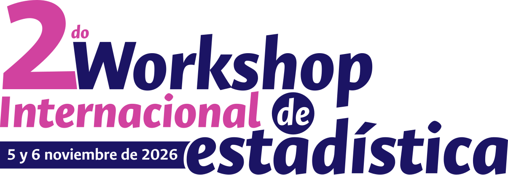

01
Modelado matemático
Ecuaciones que generan valor: construimos modelos a la medida que representan su operación y anticipan escenarios antes de que ocurran.
FastAnalytics es una empresa de investigación, ciencia y tecnología que combina el modelado matemático, la analítica de datos y la inteligencia artificial para generar predicción estratégica.
Un ciclo de nueve fases que convierte datos en decisiones anticipadas.
Nuestra filosofía es anticiparnos escuchando al futuro — y el Eneágono Decisional es su base conceptual y técnica. Integra nuestras innovaciones científicas en productos que agregan valor, descubre las señales débiles y decide antes. El dato entra, la decisión sale.
El decisor describe su compromiso de liderazgo.
Predicción estratégica = f(modelado matemático, analítica de datos, inteligencia artificial) + ε
ε es la incertidumbre que ningún modelo elimina solo; reducirla es tarea del criterio humano. Por eso el decisor y su equipo son parte fundamental del método.
Del dato crudo a la decisión anticipada, para empresas de todo sector.
Ecuaciones que generan valor: construimos modelos a la medida que representan su operación y anticipan escenarios antes de que ocurran.
Enfoque en la comunicación con datos: tableros Shiny, analítica territorial y mapas de resultados que facilitan su interpretación.


Agentes de IA organizados por la función de valor que aportan a su empresa —datos, análisis, coordinación, anticipación, aprendizaje— con evaluación independiente de calidad, para empresas de todo sector.
El método en acción: datos, análisis, mando y anticipación en una demostración interactiva del ecosistema completo.
Ingresar al ecosistema →La investigación es la base de cada producto que construimos.

Grupo de investigación aplicada en modelado matemático: convertimos problemas reales de decisión en modelos que pueden calcularse, probarse y mejorarse.
Conocer el grupo →
La producción científica que sustenta el método: artículos revisados por pares, capítulos de libro, libros y trabajos de grado del fundador.
Ver publicaciones →ChronNet: demostración de redes espacio-temporales presentada en este evento.
Ver la charla →
Redes espacio-temporales para mapear y desarticular el crimen organizado transnacional — material de la charla.
Ver la charla →
El método completo: del dato al mapa de la red criminal, con casos reales.
Ver curso →La universidad contrató a nuestro fundador para crear el curso Metodología Decisional de la Especialización en Liderazgo e Innovación Pública: gestión organizacional, analítica de datos e inteligencia artificial en un solo marco predictivo, basado en el Eneágono Decisional.
El futuro habla en datos. ¡Lo anticipamos con decisiones!